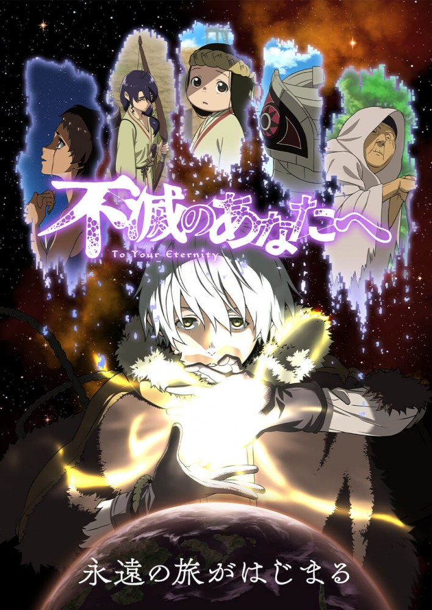

Qui suis je ?
-
1. Je suis l'appelation du mot "voiture" en anglais.
-
2. Les parents crient souvent "!!!" à leurs enfants quand c'est l'heure d'aller se coucher.
-
3. On obtient très souvent un "xxxxx" quand on fait ses lacets.
-
Alors, avez vous trouvez mon prénom ?
-
Réponse : Caroline Liard
Charade / Devinette de mon invention ~
Un peu d'exercice cérébral s'il vous plait
J'ai un faible pour les jeux de mots nuls.
Trois séries coup de
Fumetsu No Anata A // To Your Eternity
Un être immortel a été envoyé sur Terre. Il rencontre d'abord un loup puis un jeune garçon vivant seul au milieu d'un paysage enneigé. Ainsi commence le voyage de l'Immortel, un voyage fait d'expériences et de rencontres dans un monde implacable...
Aventure / Drame / Fantasy / Mystère
Umbrella Academy

En 1989, le même jour, quarante-trois bébés sont inexplicablement nés de femmes qui n'étaient pas enceintes et que rien ne relie. Sir Reginald Hargreeves, un industriel milliardaire, adopte sept de ces enfants et crée The Umbrella Academy pour les préparer à sauver le monde. Mais tout ne se déroule pas comme prévu. Les enfants devenus adolescents, la famille se désagrège et l'équipe est dispersée. Les six membres toujours en vie, désormais trentenaires, se retrouvent à l'occasion de la mort de Hargreeves. Luther, Diego, Allison, Klaus, Vanya et Numéro Cinq travaillent ensemble pour résoudre le mystère qui entoure la mort de leur père. La famille désunie se sépare cependant de nouveau, incapable de gérer des personnalités et des pouvoirs trop différents, sans même parler de l'apocalypse qui menace...
Comédie Noire / Action / Fantasy / Drame / Science-fiction
Arcane

Championnes de leurs villes jumelles et rivales (la huppée Piltover et la sous-terraine Zaun), deux sœurs Vi et Powder se battent dans une guerre où font rage des technologies magiques et des perspectives diamétralement opposées.
Fantasy / Aventure / Action
Trois musiques coup de
Fall Out Boy - THE PHOENIX
Rock

Studio Killers - Jenny
Electro / Pop

Caravan Palace - Lone Digger
Electro